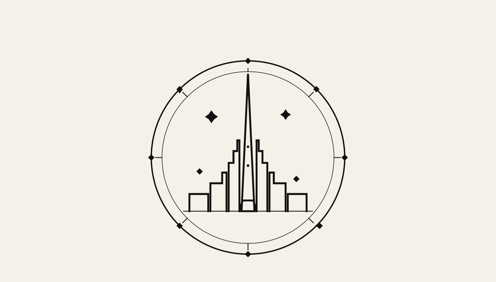
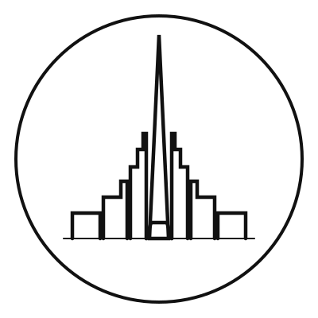
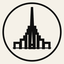
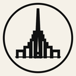
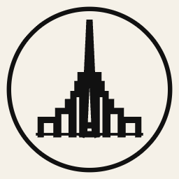

Geometric City Logo — Output Kit
v8 — linework medallion with horizon, compass nodes, and stepped base
Primary versions

Main — Light
Reverse — Dark

Stamp — Condensed
Favicon sizes
16×16
32×32
48×48

64×64

128×128

256×256
File inventory
logo-skyline.svg— Primary, light backgroundlogo-skyline-reverse.svg— Reverse colors for dark UIlogo-stamp.svg— Condensed stamp / seal versionpreview-skyline.png— PNG preview of main logo (800×800)favicon-16.png·favicon-32.png·favicon-48.png·favicon-64.png·favicon-128.png·favicon-256.png— Favicon size variantsREADME.md— Kit documentation